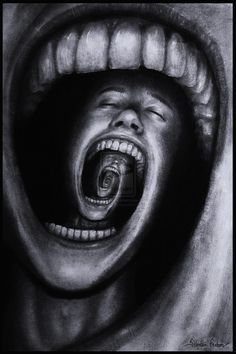

Art styles describe the way the artwork looks. Style is basically the manner in which the artist portrays his or her subject matter and how the artist expresses his or her vision.
Style is determined by the characteristics that describe the artwork, such as the way the artist employs form, color, and composition, to name just a few. Another important factor in determining the style of an artwork is to examine the way the artist handles the medium, taking into account the method or technique that the artist uses. An additional aspect of art styles is the philosophy or driving force behind the artwork. All of these stylistic elements are defined by the choices artists make as they compose their artwork.
REALISM |
SURREALISM |
MODERN |
MORBID |
ROMANTICISM |